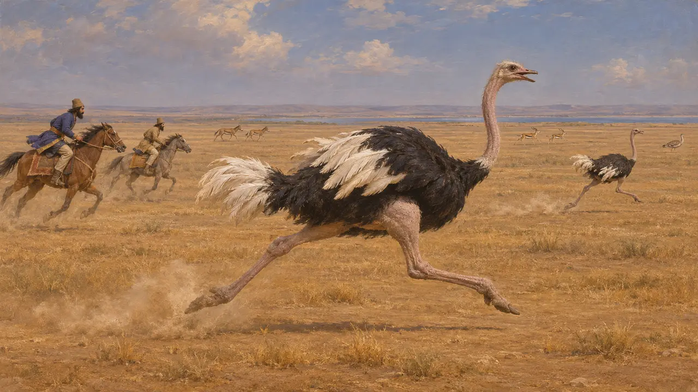
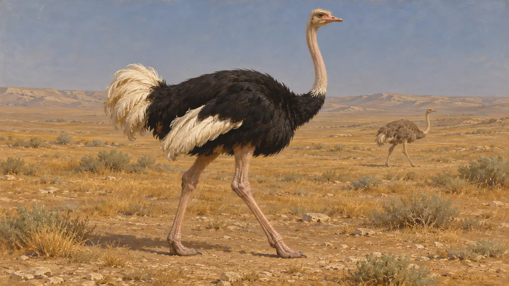
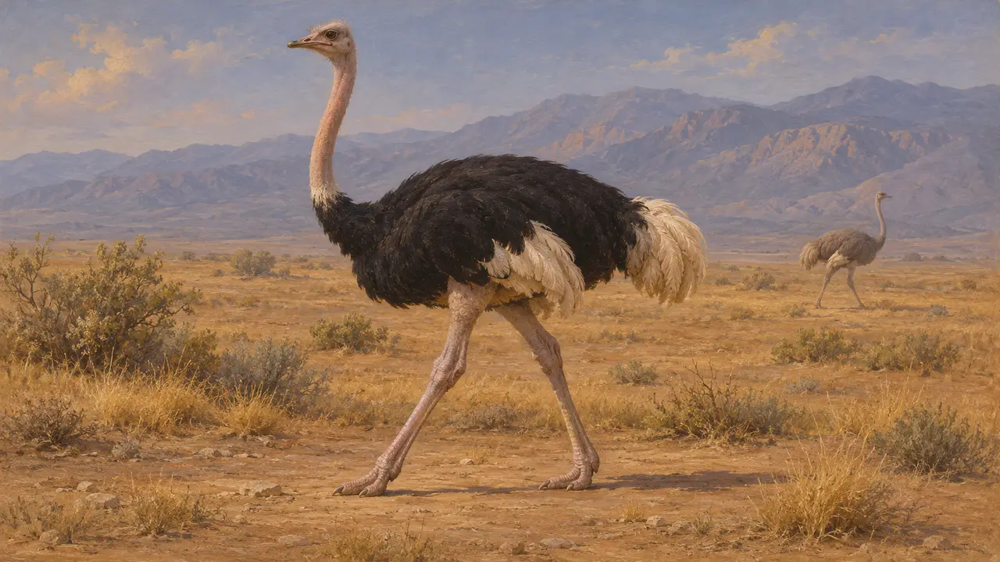
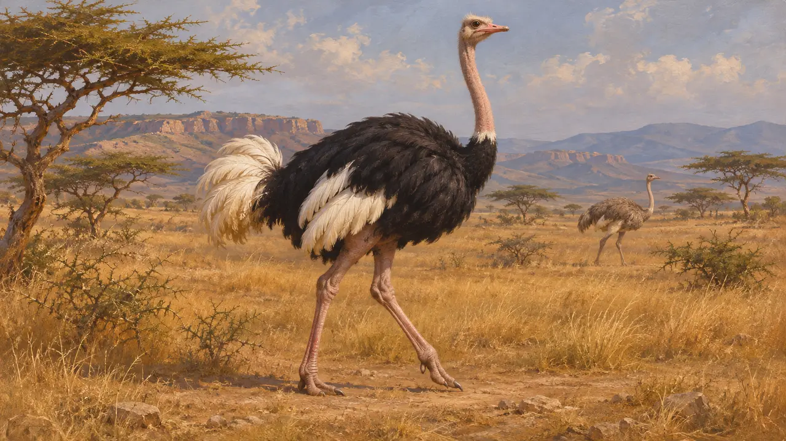

شترمرغ
پرندهٔ بزرگ و ناپرندهٔ استپهای خاور نزدیک، گزارششده از سوی گزنفون در حدود 401 پ.م.
در بازی: مرحلهٔ ۵: منشور
شترمرغ عربی در زمینهای خشک و باز جنوب غربی آسیا میزیست و تا سدهٔ بیستم برجای ماند. برای دورهٔ پارسی، بیشتر از گزارش گزنفون دربارهٔ آن در دشت فرات شناخته میشود. اینکه در نزدیکی شوش میزیسته، مستند نیست.
در بازی: بازی شترمرغها را فقط در مرحلهٔ شوش بهعنوان صحنهآرایی میکشد و هیچ قاعدهای آنها را نمیخواند. انتخاب شوش برداشت طراحان است، زیرا گزنفون آنها را در دشت فرات جای میدهد، نه در عیلام.

گزنفون دربارهٔ دشت فرات
روایت باستانیگزنفون، که در 401 پ.م. همراه کوروش کوچک لشکر کشید، دشتی بیدرخت را کنار فرات وصف میکند که گورخرها، شترمرغها، هوبرهها و غزالها در آن میزیستند. او میگوید سواران شترمرغها را دنبال کردند و هیچیک گرفتار نشد، زیرا پرندگان از اسبها تندتر میدویدند.
Xenophon, Anabasis 1.5.2-3

گزارشی از جلگهٔ شوش نیست
مورد مناقشهدشتِ گزنفون بسیار دورتر، در شمال باختری شوش، قرار داشت. بنابراین گفتهٔ او شترمرغ را در عیلام جای نمیدهد. تنها نشان میدهد که این پرنده در دورهٔ فرمانروایی هخامنشیان در استپ خاور نزدیک میزیست و گسترهٔ پراکندگیاش در شرقتر مسئلهای است که باید از راه استنباط به آن پرداخت.
Xenophon, Anabasis 1.5

گستره در جنوب غرب
مورد مناقشههیچیک از منابع بهکاررفته در اینجا شترمرغ را در جلگهٔ شوش نشان نمیدهد. دشتهای پست جنوب غربی ایران شاید در مرز گسترهٔ این پرنده یا فراتر از آن باشند. نمایش آنها در شوش حدسی معقول است، نه واقعیتی مستند.
P. Briant, From Cyrus to Alexander, 2002

شترمرغ در نوشتههای دورهٔ روم
روایت باستانیپلینی که در سدهٔ نخست میلادی مینوشت، شترمرغ را جانوری از آفریقا و اتیوپی میدانست. این نوشته مدتی بس دراز پس از امپراتوری پارسی است و دربارهٔ عیلام در سدههای ششم و پنجم پ.م. چیز اندکی میگوید.
Pliny, Natural History 10.1
منابع
- Xenophon, Anabasis 1.5.2-3
- Pliny, Natural History 10.1
- P. Briant, From Cyrus to Alexander, 2002